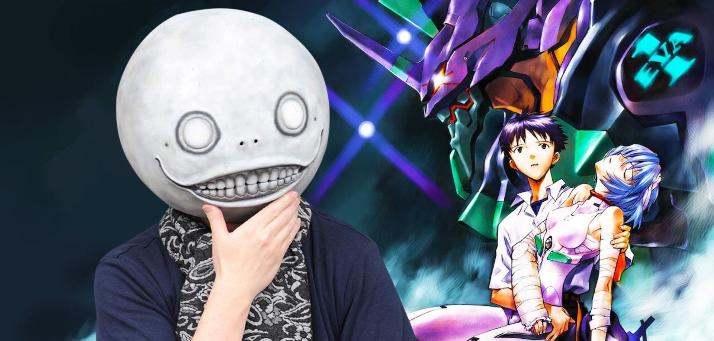

Yoko Taro / ACTUALITES
Annonces, projets et nouvelles autour de ses créations.

La collaboration entre NieR et Evangelion réunit deux univers qui se ressemblent par leur ambiance postapocalyptique, leurs combats spectaculaires et leurs questions sur l'humanité. Dans les deux séries, des personnages luttent contre des forces qui les dépassent, tout en cherchant leur place et le sens de leur existence. La collab fonctionne donc naturellement : elle fait se rencontrer deux mondes à la fois sombres, mystérieux et profondément introspectifs.
Le 23 février 2026, une nouvelle série Evangelion a été annoncée lors des célébrations du 30ᵉ anniversaire de la franchise. Yoko Taro en signe le scénario et la composition de série. Kazuya Tsurumaki et Tōko Yatabe sont annoncés à la réalisation, Keiichi Okabe à la musique, et Studio Khara travaille sur le projet avec CloverWorks.
L'annonce confirme la participation de ces créateurs, mais ne précise pas encore le titre définitif de la série ni sa date de diffusion. Elle ne constitue pas non plus l'annonce d'un nouvel épisode de NieR.
Regarder la bande annonce